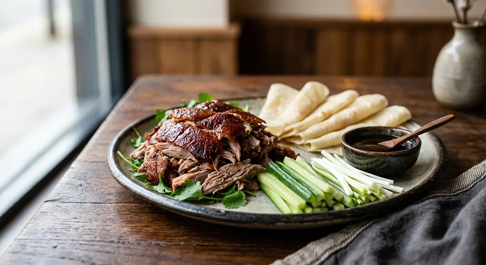

Crispy aromatic duck — a whole duck glazed, air-dried and roasted until the skin shatters, served shredded with pancakes, cucumber, spring onion and hoisin. The UK Thai-Chinese centrepiece.

เป็ดปักกิ่ง
Every British Chinese takeaway menu has it, and most Thai restaurants list it too: half a duck, shredded tableside, wrapped in pancakes with cucumber, spring onion and hoisin. The name in Thailand is ped pak king — Peking duck — and the technique is ancient: dry the skin, glaze it, roast it until it cracks like glass.
The UK version differs in one respect. Here the duck is usually deep-fried after steaming, which shatters the meat into shreds; in the original, the duck is roasted whole and carved so the skin comes off in lacquered shards. The recipe below is the original, with the quick fried version in the variations.
| Thai | English | Amount |
|---|---|---|
| เป็ดสด | Whole duck | 1 (about 2kg) |
| ผงพะโล้ | Five-spice powder | 1 tbsp |
| น้ำตาลทรายแดง | Brown sugar | 1 tbsp |
| ซีอิ๊วดำ | Dark soy sauce | 1 tbsp |
| ซีอิ๊วขาว | Light soy sauce | 1 tbsp |
| ซอสหอยนางรม | Oyster sauce | 1 tbsp |
| เหล้าจีน | Chinese cooking wine | 1 tbsp |
| แบะแซ | Maltose or honey, for the skin glaze | 1 tbsp |
| กระเทียม | Garlic | 6 cloves |
| พริกไทย | White pepper | 1/2 tbsp |
| รากผักชี | Coriander roots | 2 |
| Thai | English | Amount |
|---|---|---|
| น้ำเปล่า | Water | 2 litres |
| น้ำตาลทราย | Sugar | 3 tbsp |
| น้ำส้มสายชู | White vinegar | 3 tbsp |
| น้ำผึ้ง | Honey | 2 tbsp |
| เกลือ | Salt | 1 tbsp |
| Thai | English | Amount |
|---|---|---|
| แผ่นแป้ง | Chinese pancakes, shop-bought or see tips | 16-20 |
| แตงกวา | Cucumber, cut into batons | 1/2 |
| ต้นหอม | Spring onions, cut into fine strips | 6 |
| ซอสฮอยซิน | Hoisin sauce | 4 tbsp |
Restaurants make this look casual. It is not. The duck needs an overnight uncovered rest to dry the skin, a glaze bath, then a two-hour air-dry, then the roast. Skip the drying and you get a braised duck — good, but not the dish you paid for. The good news: almost all of it is waiting time.
The classic trick is ladling boiling water, sugar, vinegar and honey over the duck until the skin tightens and turns pale gold. The vinegar breaks down the skin's surface so the fat renders through it in the oven — that is what makes the crackle.
This recipe is translated from the following Thai-language sources. Where they disagree, we've said so.
1. Wongnai — Peking duck (ped pak king) — https://www.wongnai.com/recipes/peking-duck
2. Aroifin — Peking duck — https://aroifin.com/recipes/peking-duck/